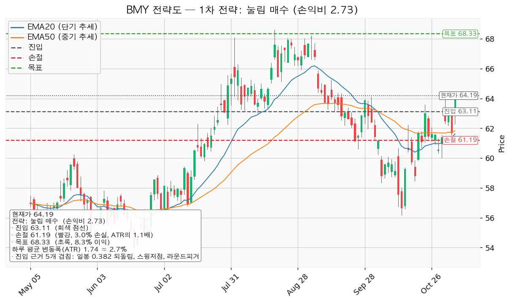
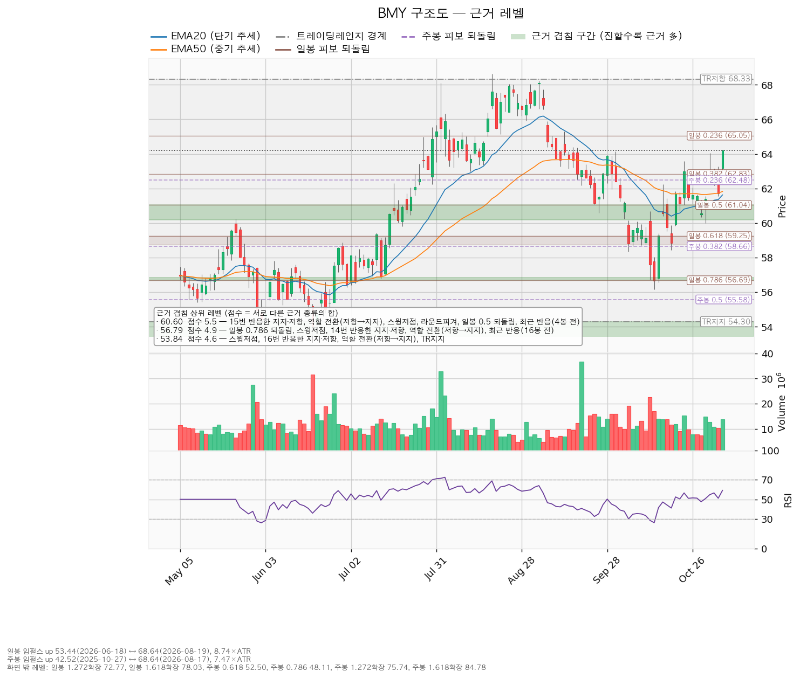
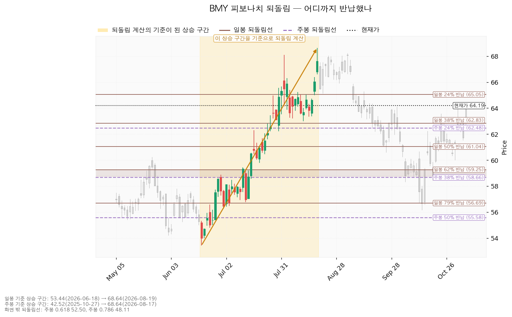
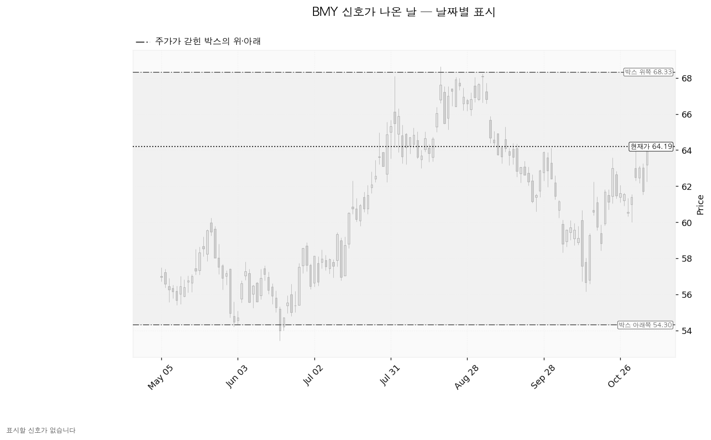

브리스톨마이어스스퀴브(BMY)는 항암제, 심혈관 치료제, 면역 치료제 등 처방 의약품을 개발하고 판매하는 미국 제약사입니다.
| 구분 | 가격 | 판정 방식 | 현재 상태 (11/4 종가 64.19달러) |
|---|---|---|---|
| 회복선 (진입 조건) | 63.11달러 눌림 매수 | 장중 터치, 지정가 | 대기, -1.68% (0.62 ATR). 단기 회복선 64.56달러(+0.58%)는 종가로 넘어도 매수 조건이 아닙니다 |
| 집행 손절 | 61.19달러 | 장중 터치 | 체결한 경우에만 유효, 미진입 시 의미 없음. -4.67% (1.72 ATR) |
| 관망 종료 기준 | 2027-02-04 실적 또는 68.33달러 종가 돌파 | 그때까지 미체결이면 매수 계획 종료 | 유지 중 |
| 확인선 | 68.33달러 | 일봉 종가 돌파 후 되돌림 지지 | 미돌파, +6.45% (2.38 ATR). 목표와 같은 가격 |
| 폐기선 | 54.30달러 | 이탈 후 3거래일 내 미회복(또는 52.56달러 아래 종가) + 반등에서 저항 확인 | 유지 중, -15.41% (5.68 ATR), 실무상 작동하지 않음 — 체결 전에는 관망 종료 기준을 봅니다 |
| 항목 | 내용 |
|---|---|
| 셋업 | 눌림 매수 · 선취형(구조 미확인) |
| 진입 | 63.11달러 — 근거 5개 겹침(62.83~63.59달러): 일봉 0.382 되돌림, 스윙저점, 라운드피겨, 스윙고점, 9봉 전 최근 반응 |
| 손절 | 61.19달러 (진입 대비 -3.03%) — 20일선·50일선·라운드피겨 62달러·주봉 0.236 되돌림이 겹친 61.63~62.48달러 구간 바로 아래 |
| 목표 | 68.33달러에서 전량 매도 (목표 도달, 진입 대비 +8.3%) — 스윙고점과 박스 상단이 겹치는 자리 |
| 손익비 | 1:2.73 (손절 1.10 ATR). 손절이 이미 구조 아래에 있어 구조적 손절 기준도 1:2.73입니다 |
| 엣지 | 평균회귀 — 지지로 눌릴 때 삽니다. 승률이 높고 이익 폭이 작은 유형이며 저항에서 전량 매도가 맞습니다 |

손익비·구조 증명도·근거 겹침을 곱해 대표로 골랐고, 지수 대비 20일 초과수익으로 순위에 1.09배가 곱해졌지만 대표는 바뀌지 않았습니다. 돌파 후보는 돌파 확인형으로 구조가 먼저 증명되지만 손익비가 1:1.60 (손절 2.66 ATR)이고 거래량이 20일 평균의 최대 1.2배에 그칩니다. 눌림 매수는 구조가 증명되기 전에 잡는 자리라 진입가는 유리하지만 실패 가능성이 더 큽니다. 62.83~63.59달러는 10/22(고가 63.59달러)·10/30(고가 64.05달러, 종가 62.48달러)에 위에서 되밀린 가격대이고, 11/4 종가로 올라선 뒤 지지로 시험받은 적이 없습니다. 분할 청산은 손익비를 1:2.73에서 1:1.75로 낮추므로 단일 목표 전량 매도입니다. 확인선과 목표가 같으므로 68.33달러에서 전량 매도 (목표 도달)하고, 이후 종가로 넘으면 새 셋업으로 다시 잡습니다. 주문은 11/5(뉴욕) 세션부터 넣습니다. 시가가 63.11달러 아래면 시가에 체결되며, 시가가 61.19달러 아래로 열리면 주문을 취소하고 매수 계획을 종료합니다. 64.56달러를 종가로 넘어도 추격 매수는 하지 않습니다(같은 손절이면 손익비 1:1.12).
1. 관찰: 일봉 종가가 63.11달러 아래로 마감. 되돌아 올라오면 속임수 하락일 수 있어 아직 무효가 아닙니다. 신규 진입만 중단합니다. 2. 경고: 이탈 후 3거래일 안에 63.11달러를 종가로 회복하지 못함, 또는 그 전에 일봉 종가가 61.37달러 아래로 마감 (하루 평균 변동폭의 1배만큼 더 밀림) — 둘 중 먼저 오는 쪽. 되돌림 지지를 잃었을 가능성이 커진 상태입니다. 3. 무효: 반등이 63.11달러에서 막히고 그 아래로 되밀림(지지가 저항으로 전환). 전량 매도 (시나리오 폐기) 후 새 구조가 만들어질 때까지 관망합니다. 장중 일시 이탈은 어느 단계에도 해당하지 않습니다. 집행 손절 61.19달러는 이 판정과 무관하게 별도로 작동하며, 경고 가격 61.37달러와 0.18달러 차이라 대부분 같은 날 함께 걸립니다. 논지 무효화: 폐기선 54.30달러는 하루 평균 변동폭의 3배를 넘게 떨어져 있어 실무상 무효화 기준으로 작동하지 않습니다. 대신 2027-02-04 실적에서 4분기 주당순이익이 기대치 1.50달러, 매출이 기대치 126.6억달러에 못 미치고, 영업현금흐름이 전년 4분기 19.7억달러를 밑돌고, 뒤이어 내년 주당순이익 추정 6.65달러가 내려가면 논지가 깨진 것으로 봅니다.
| 가격대 | 겹치는 것 | 위치 |
|---|---|---|
| 68.10~68.64달러 | 스윙고점 3개, 박스 상단 | 목표·확인선 |
| 64.13~65.00달러 | 스윙고점(9/30), 라운드피겨, 9봉 전 반응 | 단기 회복선 |
| 62.83~63.59달러 | 일봉 0.382 되돌림, 스윙 고·저점, 라운드피겨, 9봉 전 반응 | 진입 |
| 61.63~62.48달러 | 20일선, 50일선, 라운드피겨, 주봉 0.236 되돌림, 14봉 전 반응 | 손절 바로 위 |
| 60.18~61.04달러 | 15회 반응한 60.18달러 선반(저항→지지), 스윙저점, 라운드피겨, 일봉 0.5 되돌림, 4봉 전 반응 | 다음 지지 |
| 57.99~58.66달러 | 18회 반응한 57.99달러 선반(저항→지지), 주봉 0.382 되돌림, 22봉 전 반응 | 그다음 지지 |

박스는 전체 752봉 중 180봉을 본 54.30~68.33달러(폭 8.06 ATR)이고 가격이 그 안에 99.4% 머물렀습니다. 직전 구간(42.86~58.69달러 박스)을 위로 벗어나 이 박스에 들어왔으므로 재축적과 분산이 아직 갈리지 않았습니다. 안쪽 판정은 중립입니다. 지지 테스트 거래량은 늘었고(6/18 평균의 2.48배, 10/13 1.17배) 저점은 절상됐으며(6/18 53.44달러 → 10/13 56.15달러) 상승봉 대 하락봉 거래량비는 0.97입니다. 일봉 되돌림은 6/18 53.44달러~8/19 68.64달러, 주봉은 2025-10-27 42.52달러~2026-08-17 68.64달러 구간으로 쟀습니다. 10/13 저점 56.15달러는 일봉 0.786 되돌림(56.69달러) 아래까지 내려갔다가 회복했습니다. 위쪽 확장은 일봉 1.272 72.77달러, 주봉 1.272 75.74달러입니다. RSI(14일 상승·하락 강도)는 59.15입니다.

박스 안에서 속임수 하락·돌파 같은 신호가 난 날은 없고, 국면 후보도 정해지지 않았습니다.

| 날짜 | 확인할 것 |
|---|---|
| 2027-02-04 (회사 확정 여부 미확인) | 4분기 실적. 주당순이익 기대 1.50달러(1.32~1.63), 매출 기대 126.6억달러(124.2억~130.3억, +1.30%) |
| 2027년 1분기 실적 (날짜 없음) | 주당순이익 기대 1.51달러(-4.22%), 매출 기대 111.3억달러(-3.13%) |
| 2027년 연간 | 매출 기대 486.6억달러(-2.98%), 주당순이익 기대 6.65달러(+3.41%). 매출 감소 추정의 원인은 확인할 자료가 없습니다 |
손절 폭 -3.03%에 1% 리스크를 맞추면 계좌의 33.0%가 나오므로 13%로 제한합니다. 계좌 1억원당 1,300만원이고 손절 시 손실은 약 39만원(계좌의 0.39%)입니다. ATR은 주가의 2.71%로 8% 기준 아래입니다. 손절 1.10 ATR은 하루 평균 변동폭과 비슷하고, 11/3 저가 61.54달러는 손절보다 0.35달러 위였습니다. 판정은 63.11달러 눌림 매수 대기, 손익비 1:2.73 (손절 1.10 ATR)이며 미달 항목은 이동평균 정배열, 상대강도선 신고가, 거래량 강도입니다.
ATR: 하루 평균 변동폭(14일).
RSI: 일정 기간 상승폭과 하락폭을 비교한 강도 지표.
PER: 주가를 주당순이익으로 나눈 배수.